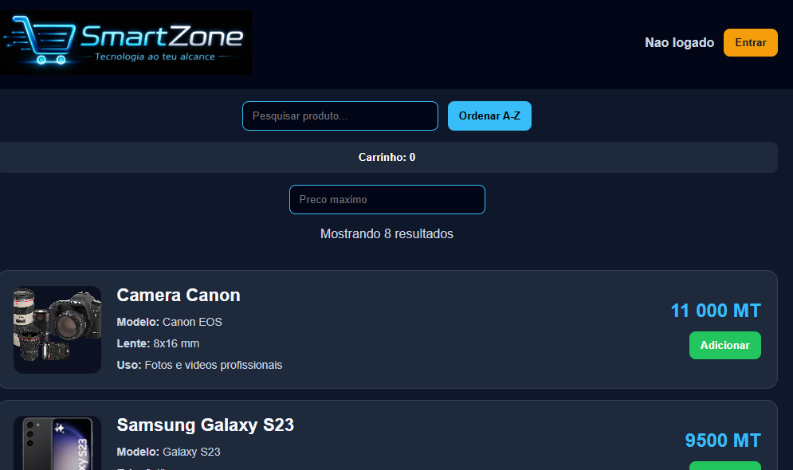
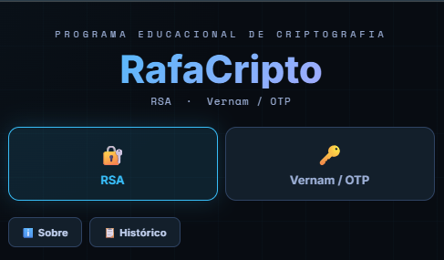
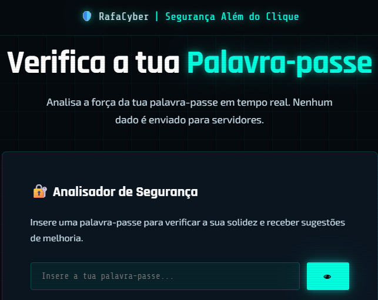

Cibersegurança web
RafaCyber
Plataforma educativa criada para ensinar boas práticas de cibersegurança, proteção de dados e utilização segura da internet.
Explora os projetos, sistemas e ferramentas desenvolvidos pela RafaCyber para resolver problemas reais e criar novas possibilidades digitais.
Plataforma educativa criada para ensinar boas práticas de cibersegurança, proteção de dados e utilização segura da internet.

Aplicação web para apoiar a gestão da Escola Sabatina da IASD de Canaã, em Pemba, e facilitar a partilha de informação entre a direção e os membros em diferentes dispositivos.

Projeto de comércio eletrónico para organizar produtos tecnológicos e oferecer aos clientes um processo de compra online simples.

Software educativo que permite experimentar os métodos RSA e Vernam (OTP) e compreender, na prática, conceitos fundamentais de criptografia.

Ferramenta de cibersegurança que avalia a robustez de palavras-passe e recomenda formas de as tornar mais seguras, sem enviar os dados para servidores.
Site pessoal criado para reunir e apresentar o perfil, as competências e os projetos de Rafique nas áreas de redes, cibersegurança e programação.